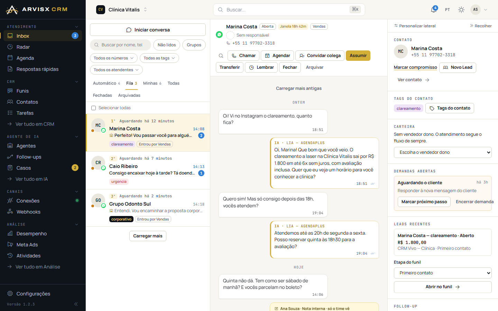
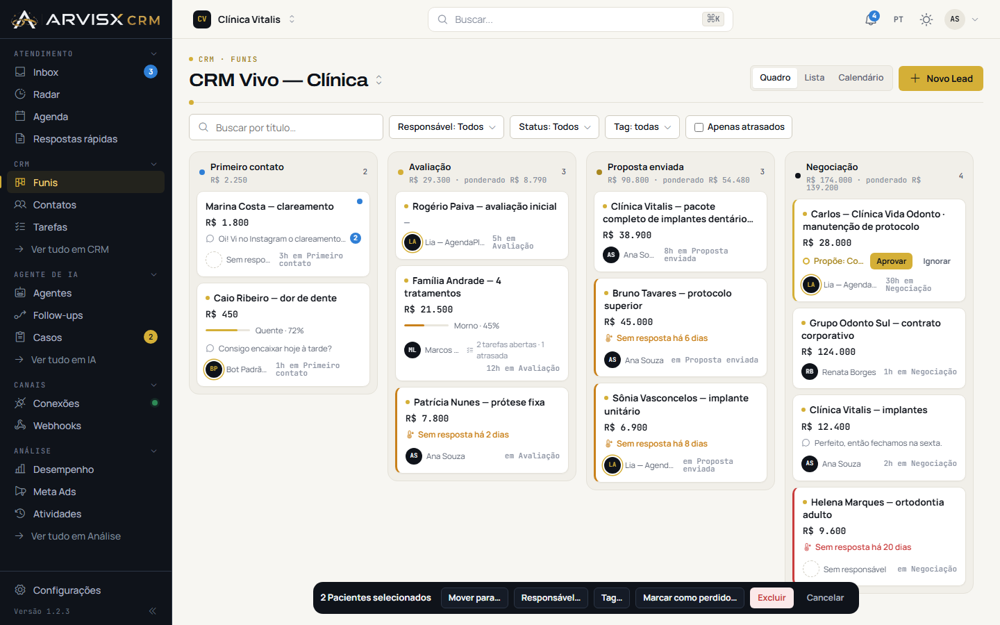
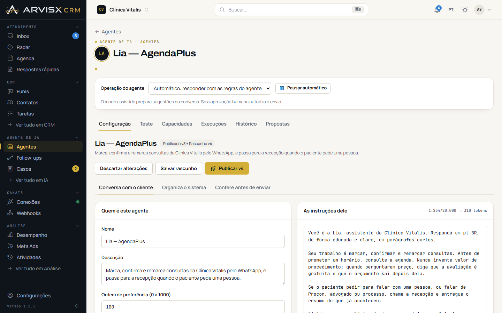

01↗
Inbox do WhatsApp com IA
As conversas de WhatsApp com você e a IA atendendo lado a lado. Fila, atendentes, notas internas e passagem para humano com resumo.
 Agendar demonstração ↗
Agendar demonstração ↗
O CRM DA ARVISX
Um CRM com agentes de inteligência artificial nativos: eles respondem, qualificam, agendam e fazem follow-up no WhatsApp, enquanto o seu time vê tudo no mesmo lugar — funil, agenda, propostas e resultado.
INBOX · AGENTES · FUNIS · FOLLOW-UP · AGENDA · ANÁLISE — NUM SISTEMA SÓ
Operações do ecossistema ARVISX que já atendem com IA
Não é um chatbot preso a uma ferramenta. É a operação comercial inteira, com a IA dentro.
O QUE VEM DENTRO
Conversa, funil, agenda, proposta e número: o ARVISX CRM junta o que hoje mora em cinco ferramentas, e põe um agente de IA trabalhando em cada etapa.
As conversas de WhatsApp com você e a IA atendendo lado a lado. Fila, atendentes, notas internas e passagem para humano com resumo.
Quadro por etapas com valor, dono, probabilidade e tempo parado. Ficha completa do cliente com histórico, tags e carteira.
Instruções, modelo, base de conhecimento, skills e roteadores. Publicação com versão, teste antes de ir ao ar e orçamento mensal.
Fluxos que retomam a conversa que esfriou, para nenhuma morrer no silêncio. O Radar mostra quem está em risco antes de perder.
A IA marca, confirma e remarca. Propostas saem de modelos com revisão humana. Campanhas falam com a lista certa no ritmo do número.
Funil e desempenho por atendente, custo da IA, Meta Ads, e onde o agente erra e o que falta ensinar.
O CAMINHO DO LEAD
Cada mensagem entra pelo WhatsApp, passa pelo agente, vira negócio no funil e segue com follow-up até a proposta. Quando precisa de gente, a conversa chega ao atendente com o resumo pronto.
Quero ver funcionando ↗POR DENTRO
Claro, direto e no celular também. O atendente vê a conversa, a ficha e o funil sem trocar de aba; o gestor vê o número.



AGENTES DE INTELIGÊNCIA ARTIFICIAL
Cada agente tem instruções, limites e ferramentas próprias. Eles conversam, consultam a base da sua empresa, executam ações e sabem a hora de chamar uma pessoa.
Responde em segundos no WhatsApp, entende a intenção, coleta os dados certos e abre o negócio no funil.
WHATSAPP → FUNIL → PRÓXIMA AÇÃOConduz as perguntas que você define e guarda as respostas na ficha do cliente. Roteadores decidem qual agente pega qual conversa.
WHATSAPP → FUNIL → PRÓXIMA AÇÃOConsulta a agenda da equipe, marca, confirma e remarca; avisa no WhatsApp cada horário marcado e manda o resumo das 7h.
WHATSAPP → AGENDA → PRÓXIMA AÇÃOPrepara a proposta a partir da conversa e do modelo da empresa. Você confere antes de enviar; nada sai sem aprovação.
CONVERSA → PROPOSTA → APROVAÇÃORetoma a conversa que esfriou no tempo certo, com texto da IA ou fixo, e para na hora que o cliente responde.
SILÊNCIO → RETOMADA → RESPOSTAQuando trava em algo que só uma pessoa resolve, abre um caso com o resumo, o que já tentou e o que o cliente quer, e segue conversando até a resposta.
IA → CASO → ATENDENTESUA MARCA, SEU SERVIDOR
Nome, cor e logo da sua empresa em todas as telas, nos e-mails e no ícone do celular. Os dados ficam num servidor seu, com LGPD de fábrica: anonimização, exportação e auditoria de quem fez o quê.
Falar sobre a implantação ↗COMO COMEÇA
Mapeamos canais, oferta, equipe e o caminho que o lead faz hoje.
Servidor, número de WhatsApp conectado, funil e marca da sua empresa.
Instruções, base de conhecimento, roteiros e follow-ups do seu negócio.
Acompanhamos os primeiros atendimentos e ajustamos pelos números.
VEJA COM OS SEUS DADOS
Agende uma demonstração: mostramos o ARVISX CRM com o cenário da sua empresa e desenhamos a implantação.
Agendar demonstração ↗ ARVISX CRM • UM PRODUTO ARVISX AI